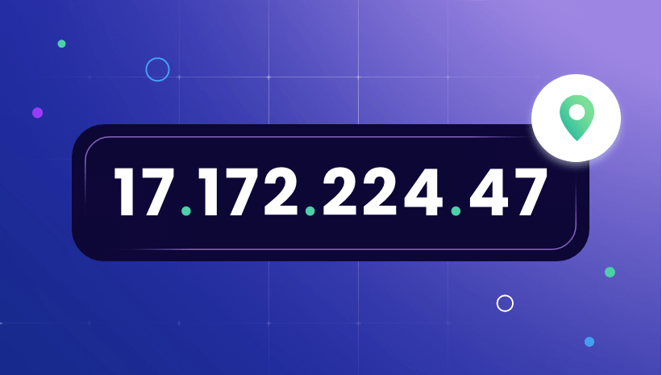

IP Addressing

What is an IP Address?
A unique number assigned to every device on a network. It tells the internet exactly where to send data.
Key Facts
- IP stands for Internet Protocol.
- Used by routers to direct data to the correct destination.
- Assigned by your Internet Service Provider (ISP) or a local network.
IPv4
- The original IP address format — still the most common.
- Example: 192.168.1.1
- Supports about 4.3 billion unique addresses.
- Running out of available addresses due to internet growth.
IPv6
- The newer format, created to replace IPv4.
- Example: 2001:0db8:85a3:0000:0000:8a2e:0370:7334
- Supports 340 trillion trillion trillion unique addresses.
- Gradually replacing IPv4 across the internet.
Public vs. Private IP Addresses
- Public IP - Assigned by your ISP. Unique globally.
- Private IP - Assigned within a local network. Not visible outside that network.
Static vs. Dynamic IP Addresses
- Static - Fixed address that never changes. Used by servers and websites.
- Dynamic - Changes each time you connect. Used by most home internet connections.